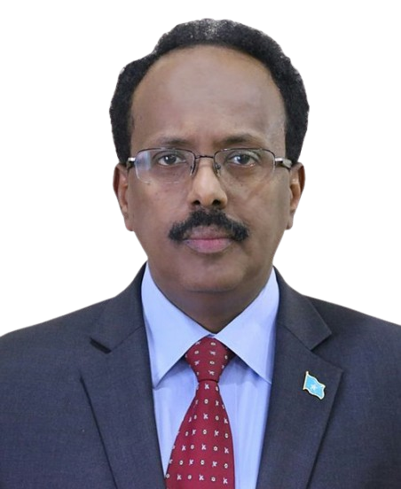
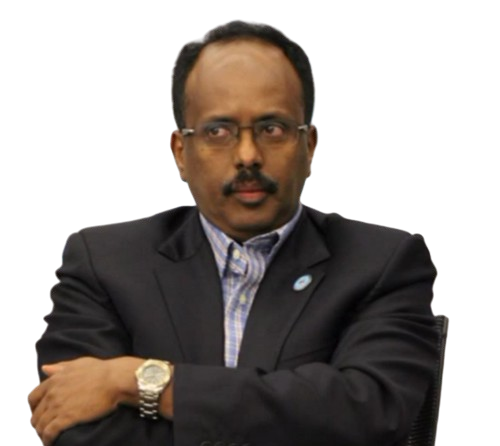
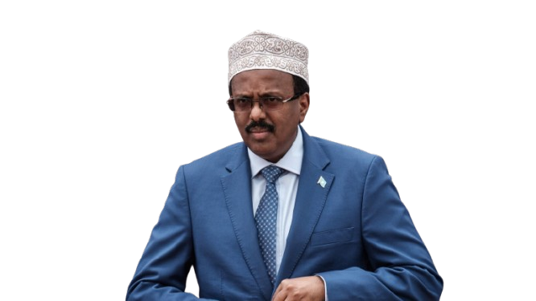
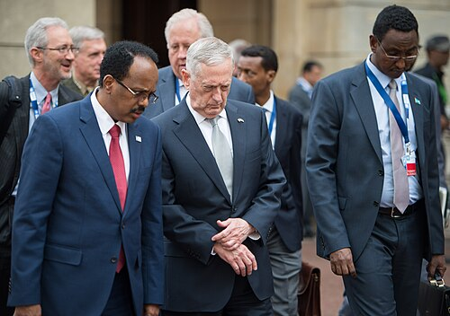

Mohamed Abdullahi Mohamed (Af Soomaali: Maxamed Cabdullaahi Maxamed (Af-Carabi: محمد عبدالله محمد; wuxuu dhashay Maarso 11, 1962), sidoo kale loo yaqaan Farmaajo, waa siyaasi Soomaaliyeed oo madaxweyne ka soo noqday Soomaaliya 2017 ilaa 2022. Wuxuu ahaa ra'iisul wasaaraha Soomaaliya muddo lix bilood ah, laga soo bilaabo Nofeembar 2010 ilaa iyo Juun 2011-kii. 2012

Maxamed waxa uu ku dhashay Muqdisho. Maxamed waxa uu ka soo jeedaa beesha Mareexaan oo ka mid ah beelaha Daarood. Waalidkiis waxay ahaayeen halgamayaal ku xidhan ururkii SYL ee ugu horreeyay ee Soomaaliya. Intii lagu jiray 1970-meeyadii, aabbihii wuxuu u shaqeeyay sidii shaqaale dawladeed Waaxda Gaadiidka qaranka. Maxamed waxa uu ka baxay dugsi boodhin ah oo ku yaalla Soomaaliya.Markii uu dagaalka sokeeye billowday 1991-kii waxa uu magangalyo ka dalbaday Kanada, waxaana ugu dambeyntii la siiyay baasaboor reer Kanada ah. Ka dib, waxa uu wax ku bartay Maraykanka halkaas oo uu sidoo kale ku andacooday magangalyo siyaasadeed oo uu ku gaadhay dhalasho Maraykan ah. Intii uu ku noolaa magaalada Buffalo ee dalka Mareykanka, Maxamed waxa uu ahaa xubin ka tirsan xisbiga Jamhuuriga. Maxamed waa muwaadin Soomaaliyeed. Maxamed wuxuu ka tanaasulay dhalashadiisii Mareykanka Agoosto 2019. Maxamed waxa u dhaxday Saynab Cabdi Macallin, Marwadii hore ee Madaxweynihii hore ee Soomaaliya. Lamaanuhu waxay leeyihiin afar carruur ah - laba gabdhood iyo laba wiil - kuwaas oo weli deggan Maraykanka, laga bilaabo 2019.
Wuxuu ka soo shaqeeyay Wasaaradda Arrimaha Dibadda ee Soomaaliya 1982 ilaa 1985. Intii u dhaxaysay 1985 iyo 1988, Maxamed waxa uu noqday Xoghayihii Koowaad ee Safaaradda Soomaaliya ee Washington. Kadib imaatinkiisii Ameerika waxa uu isku dhigay dugsi waxana uu galay jaamacada Buffalo. 1993 ayuu ku qalin jabiyay shahaadada koowaad ee jaamacadda. Laga soo bilaabo 1994 ilaa 1997, Mohamed waxaa loo doortay inuu noqdo gudoomiyaha guud ee maamulka guryaynta degmada Buffalo, wuxuuna ka shaqeeyay gudoomiyaha maaliyada. Waxa kale oo uu u soo noqday maamule kiis barnaamijka dhimista hogaanka ee magaalada 1995 ilaa 1999. Intii u dhaxaysay 2000 iyo 2002, Maxamed waxa uu ahaa isuduwaha ganacsiga dadka laga tirada badan yahay ee Qaybta Gobolka Erie ee Fursadaha Shaqo ee loo siman yahay. Laga soo bilaabo 2002 ilaa loo magacaabay ra'iisul wasaare dabayaaqadii 2010, wuxuu ka shaqeeyay sidii Wakiilka Shaqaalaysiinta siman ee Waaxda Gaadiidka Gobolka New York ee Buffalo. Muddadaas waxa kale oo uu shahaadada Masterka ee cilmiga siyaasadda ka qaatay Jaamacadda Buffalo oo uu qoraalkiisa ciwaankiisu ahaa, ‘Mareykanka. Xiisaha istaraatiijiyadeed ee Soomaaliya: Laga soo bilaabo xilligii dagaalkii qaboobaa ilaa la dagaallanka argagixisada' wuxuuna baray xirfadaha hoggaaminta iyo xallinta khilaafaadka ee Erie Community College, oo qayb ka ah Jaamacadda Gobolka New York (SUNY). Sannadkii 2007-dii, xilli uu Maxamed hoggaaminayay koox ka tirsan Jaaliyadda Soomaaliyeed ee magaalada Buffalo, ayaa waxaa qaar ka mid ah madaxda Soomaalida Mareykanka ku eedeeyeen inuu kooxda ku maroorsaday hannaanka doorashada, si uu xukunka ugu sii hayo, taasoo keentay kala qeybsanaan bulshada dhexdeeda ah.
Ra'iisul Wasaare (2010-2011)
15kii Oktoobar 2010, Maxamed waxaa loo magacaabay ra'iisul wasaaraha cusub ee Soomaaliya. Maxamed ayaa xilka loo dhaariyay 1-dii November 2010, kaddib munaasabad ka dhacday xarunta madaxtooyada ee Villa Somalia. 12kii Noofambar 2010, Maxamed waxa uu magacaabay Gole Wasiiro oo cusub, sida uu qabo Axdiga Dawladda Ku Meel Gaarka ah. Jagooyinka Wasiirada ee loo qoondeeyay ayaa si weyn hoos loogu dhigay, iyadoo 18 xil maamul laga dhigay 39-kii wasaaradood ee dowladdii hore. Labo Wasiir oo ka tirsan Xukuumaddii hore ayaa dib loo magacaabay.
Qoraal uu Maxamed u jeediyay Golaha Ammaanka ee Qaramada Midoobay 50-kii maalmood ee ugu horreysay ee uu xafiiska joogo, wuxuu ku sheegay in maamulkiisu uu billaabay hirgelinta diiwaan-gelin buuxda oo biometrik ah oo loogu talogalay ciidamada ammaanka kaasoo lagu soo gaba-gabeynayo afar bilood gudahood. Xubnaha guddiga madaxa banaan ee dastuurka ayaa sidoo kale la magacaabay si ay qareennada dastuurka Soomaaliya, culumaa’udiinka iyo khubarada dhaqanka Soomaaliyeed uga doodaan dastuurka cusub ee dalka loo qorsheeyay, kaasoo ah qeyb muhiim ah oo ka mid ah howlaha horyaalla dowladda KMG ah. Wufuud heer federaal ah ayaa loo diray si ay u qaboojiyaan xiisadaha la xiriira qabiilka ee ka dhacay dhowr gobol. Si loo horumariyo daah-furnaanta, wasiirrada xukuumadda waxay si buuxda u shaaciyeen hantidooda waxayna saxiixeen xeer anshaxeed. Waxaa sidoo kale la dhisay Guddiga La-dagaalanka Musuq-maasuqa oo awood u leh inuu sameeyo baaritaanno rasmi ah iyo inuu dib u eegis ku sameeyo go’aamada iyo hab-maamuuska dowladda si ay si dhow ula socdaan dhammaan dhaqdhaqaaqyada ay wadaan mas’uuliyiinta dowladda. Intaa waxaa dheer, safarrada aan loo baahnayn ee dibadda ee xubnaha dawladdu waa la mamnuucay, dhammaan safarrada wasiiradu hadda waxay u baahan yihiin ogolaanshaha Ra'iisul Wasaaraha. Sidoo kale waxaa la horgeeyay miisaaniyad qeexaysa kharashaadka dowladda dhexe ee 2011-ka oo ay ansixiyeen xubnaha baarlamaanka, iyadoo mudnaan la siiyay mushaaraadka shaqaalaha rayidka ah. Intaa waxa dheer, in si buuxda loo baaro hantida iyo gaadiidka dawladda. La-taliyaha sare C/raxmaan Cumar Cismaan, ayaa xusay in Maxamed uu u fiirsaday dayactirka waddooyinka, dib u furista dugsiyada dowladda iyo bixinta mushaaraadka joogtada ah ee ciidamada iyo shaqaalaha rayidka ah, taasoo keentay inuu taageero ka helo shacabka mudadii koobneyd ee uu xilka hayay.

Heshiiskii Kampala ayaa ahaa heshiis ay korjoogteynayeen Madaxweynaha Yugandha Yoweri Museveni iyo Ergeyga Gaarka ah ee Q.M u qaabilsan Soomaaliya Augustine Mahiga si loo soo afjaro marxaladda ku meel gaarka ah ee DFKMG. Guddoomiyaha baarlamaanka Shariif Xasan Sheekh Aadan ayaa sheegay in uusan la shaqeyn karin Maxamed, sidaas darteedna ay qeyb ka tahay qodobbadii lagu heshiiyay, Maxamed looga dalbaday inuu iscasilo. Shariif Xasan ayaa shaki badan ka qabay go’aankii Madaxweyne Shariif Sheekh Axmed uu Maxamed Ra’iisul Wasaare ugu magacaabay, Maxamedna uu soo magacaabay Golaha Wasiirada isaga oo aan wax badan ka soo jeedin, taasina ay keentay in Shariif Xasan uu ku adkaado in Baarlamaanka uu taageero Barnaamijyada. Iscasilaadii ka dib, Maxamed waxa uu ku laabtay Maraykanka oo uu hore uga ahaa Waaxda Gaadiidka ee Gobolka New York.
Horraantii sannadkii 2012-kii, Maxamed iyo xubno ka tirsan Golahiisa Wasiirrada ayaa aasaasay urur-siyaasadeedka Tayo ("Tayo"). Sida uu sheegay Maxamed, qorshaha koowaad ee xisbigu wuxuu ku saabsan yahay sidii loo gaarsiin lahaa guud ahaan shacabka Soomaaliyeed iyo dhiirigelinta dib u celinta qurbajoogta Soomaaliyeed si ay gacan uga geystaan dib u dhiska dalka ka dib colaadaha. Maxamed ayaa markii uu xilka ka degay kadib waxa uu olole ka waday meelo kala duwan oo caalamka ah si uu taageero ugu ururiyo xisbigiisa cusub, sida Maraykanka, Ingiriiska, Holland iyo Iswiidhan.
Horraantii bishii Agoosto 2012, Maxamed wuxuu isu soo bandhigay inuu yahay musharax madaxweyne doorashadii Soomaaliya ee 2012 laakiin waxaa lagu reebay wareegii koowaad ee doorashada.

Doorashada baarlamaanka ayay khubaradu ku tilmaameen mid ka mid ah dhacdooyinka siyaasadeed ee ugu musuqmaasuqa badan taariikhda dalka. Iyadoo ay jirto warbixino baahsan oo ku saabsan iibsashada codadka, baarayaashu waxay ku qiyaaseen ugu yaraan $20 milyan in loo bixiyay laaluush ahaan. Inta badan lacagaha la isticmaalo ayaa waxaa ka imaan jiray dalal shisheeye oo danaha ka leh Soomaaliya, kuwaasi oo rajo ka qabay in musharixiinta ay dhaqaale ku taageeraan ay danahooda ku hormariyaan. Markii la fadhiisto, baarlamaanku waxay u codeeyeen cidda madaxweyne noqonaysa. Maxamed, isaga oo u ololaynayay sidii musharraxa la dagaalanka musuqmaasuqa, waxa uu ku guulaystay madaxweynanimada wareegii labaad ee codbixinta, ka dib markii garoonka laga dhigay in ka badan labaatan ilaa saddex. Wareegii labaad ee doorashada waxa uu helay 184 cod oo ka mid ah 329 cod, guushaas oo la yaab ku noqotay falanqeeyayaasha. Ilaha wararka Mareykanka ayaa sidoo kale iftiimiyay aqoonta uu u leeyahay siyaasadda Mareykanka sida hal hanti oo suurtagal ah si uu uga caawiyo isaga madaxweyne ahaan. Maxamed waxa uu u ololeeyay ballan qaadyadii dastuur cusub, doorasho hal qof iyo hal cod ah iyo ciribtirka Al-Shabaab.

Maamulkan curdanka ah ayaa markii hore hay’adda lacagta adduunka ee IMF ku ammaantay dib u habeynta maaliyadeed ee ay ku samaysay, iyo kormeerayaasha dublamaasiyadda dadaalka ay ugu jiraan sidii ay wax uga qaban lahaayeen musuqmaasuqa iyo qashin-qubka ciidamada qalabka sida. Gudaha dalka ayaa shacabka ku kala qeybsameen taageerada ay u hayaan madaxweynaha cusub, iyadoo inta badan mucaaradka ay kasoo horjeedaan beelaha dega gobolada dhexe ee dalka.
Bishii December 2018, xildhibaanadu waxay mooshin xil ka qaadis ah ka gudbiyeen Maxamed. Warkan ayaa lagu dhawaaqay kadib weerar lagu bartilmaameedsaday hoggaamiyaha mucaaradka Cabdiraxmaan Cabdishakuur Warsame, oo ka soo jeeda beesha Habar Gidir. Mooshinkan ayaa ugu dambeyn lagu dhawaaqay inuu buray ka dib markii afar iyo toban Xildhibaan oo magacyadooda ka muuqday ay sheegeen inaysan waligood saxiixin.